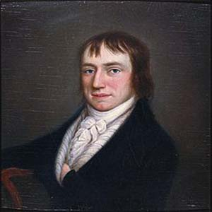
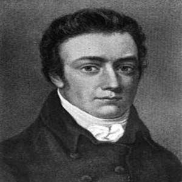

English Literature
Romantic Period (1798-1832)
রুমান্টিক যুগের কবিদের মনে রাখার কৌশল
সাউদির কালো ছোট ছেলে অস্ট্রেলিয়ার হ্যাজলউড এর বল খেলতে পারেনা
William Wordsworth
Samuel Taylor Coleridge
Robert Southey
William Blake
John Keats
P.B. Shelley
Jane Austen
William Hazlitt
Lord Byron
List of Writters
Romantic period start with the publication of
Lyrical Ballad(1798)

William Wordsworth
About :
*** He is called poet of Nature
*** He was influenced by french Revolution
*** Famous romantic poet
Famous Poems:
The Deffodils
The Solitary Reaper
The Prelude
Tintern Abbey
Famous Quotations:
Child is the father of man (My heart leaps up)
Ten Thousand I saw at glance (deffodils)
Samuel Taylor Coleridge
About :
*** He is addicted to opium
Famous Poems:
The kubla khan
The Rime of the Ancient Mariner
Biographia Literaria
Famous Quotations:
"Alone, alone, all alone, alone, on a wide, wide see"(The Rime of the ancient mariner)
